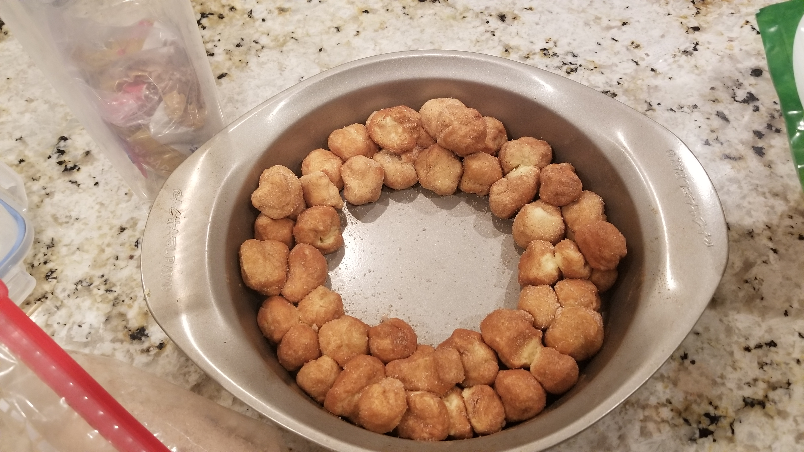
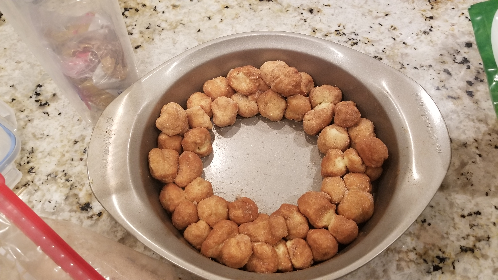
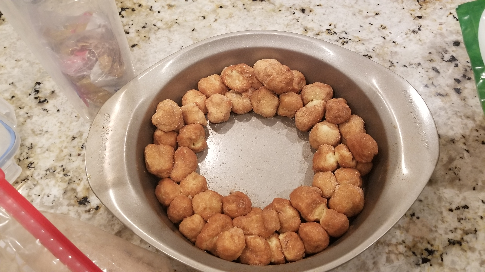

Monkey Bread Recipe
Today I made monkey bread. Monkey bread is a pull-apart, cake-like dessert with an addictive cinnamon and brown sugar flavor. I hope you guys get a chance to try it!
Ingredients:
- 1/4 cup Margarine, - $2.99
- 1/3 cup Brown Sugar - $2.52
- 2 and 1/2 tablespoons Maple Syrup - $6.88 (don't pay this much for maple syrup)
- 1/4 cup sugar - $1.44
- Crescent rolls - $2.18
- 2 Teaspoons ground cinnamon
-Monkey ballz-
Preheat oven to 350° and shape dough into balls

Add sugar and cinnamon in a ziplock bag, then add the balls 8 at a time and shake them fellers 'til their coated.
 

-Monkey Sauce-
Add margarine, brown sugar and maple syrup to a pan and mix over medium heat until the mixture gets all fluffy and bubbly. You can add the leftover cinnamon-sugar coating into the mix for extra monke flavor.
Drizzle the Monkey sauce over Monkey ballz then bake until cooked through (about 35 minutes)

Enjoy!!
Shopping list
f

-Monkey Sauce-
Add margarine, brown sugar and maple syrup to a pan and mix over medium heat until the mixture gets all fluffy and bubbly. You can add the leftover cinnamon-sugar coating into the mix for extra monke flavor.
Drizzle the Monkey sauce over Monkey ballz then bake until cooked through (about 35 minutes)
Enjoy!!
Shopping list
f